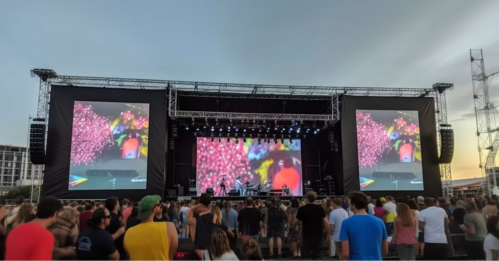
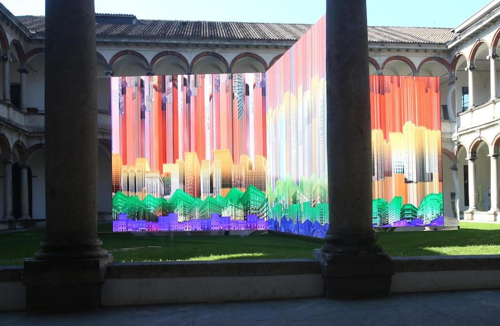

By Cassie
What does a Kazakhstan LED display importer need to know? Importing LED displays into Kazakhstan means clearing goods through a land border or rail crossing rather than a seaport, holding EAC certification issued under the Eurasian Economic Union rules, and specifying equipment that survives a continental winter. This 2026 guide explains each step.
Kazakhstan is the largest economy in Central Asia and a member of the Eurasian Economic Union, which gives it a customs code shared with Russia, Belarus, Armenia, and Kyrgyzstan. Demand for LED displays comes from retail chains, banks, telecoms, transport, mining, and public-sector signage, and almost every professional screen is imported from China.
A Kazakhstan LED display importer who arranges the EAC documentation before dispatch and books the correct land or rail route clears cargo without difficulty. The obligations that catch buyers out are the conformity certificate and the extreme winter specification.
Kazakhstan has no seaport connected to the main consumption centres, so containerised LED display cargo arrives by rail or truck through the land border crossings with China. The Khorgos gateway and the Dostyk and Altynkol rail crossings handle most freight from Shenzhen and Guangzhou, and the Caspian port of Aktau serves routes through the Caucasus and Iran.
The importer must be registered with the state revenue authority and hold a business identification number before a declaration can be filed through the electronic customs system. Because Kazakhstan applies the common EAEU customs code, the declaration and the conformity documents follow the same structure used across the union.
| Step | What Is Required | Who Handles It |
|---|---|---|
| Business registration | Tax registration and business identification number | Importer |
| EAC conformity | Certificate or declaration of conformity for the model | Supplier, arranged with the importer |
| Customs declaration | Entry filed through the electronic customs system | Importer or broker |
| Duty and VAT | Assessed on the customs value | Importer |
| Border handling | Terminal and inspection charges at Khorgos or the rail crossing | Broker |
| Inland transport | Rail or truck delivery to site or warehouse | Importer or broker |
Confirm that the consignee named on the rail waybill or the CMR matches the importer of record. A mismatch between the transport document and the customs declaration is one of the most common causes of delay at the border, and correcting it takes longer than checking it before dispatch.
Kazakhstan applies the technical regulations of the Eurasian Economic Union, and electrical products are covered principally by the low-voltage equipment regulation and the electromagnetic compatibility regulation. Conformity is demonstrated through EAC certification or an EAC declaration of conformity, and the product carries the EAC mark.
Certificates are issued by accredited certification bodies within the union, and the manufacturer or the importer may hold the certificate depending on the scheme. Standards work is coordinated by the national standards body, and the certificate must name the exact model being supplied.
| Requirement | What It Covers | Evidence to Hold |
|---|---|---|
| EAC certificate or declaration | Product conformity under EAEU technical regulations | Certificate or declaration naming the model |
| Low-voltage safety | Electrical safety of equipment | Safety test report for the model |
| EMC conformity | Electromagnetic compatibility | EMC test report for the model |
| EAC mark | Marking applied to the product | Photographic evidence of the mark |
| Technical file | Drawings and specifications | Complete file held by the importer |
| Russian labelling | Product information for the market | Label artwork in Russian or Kazakh |
Confirm the certificate covers the exact model being imported and that the EAC mark is applied at the factory. A document covering a similar screen in the same range does not cover a different model, and the discrepancy is usually found at the border rather than at the factory.
Kazakhstan applies the common EAEU external tariff, which sets duty according to the commodity code and the country of origin. Duty is calculated on the customs value, and value added tax applies on top of the duty-paid value. A customs processing fee is charged per declaration.
Model the landed cost before comparing suppliers, because the charges between the factory gate and the site are where budgets are lost on a route that crosses a land border.
| Cost Element | Basis | Notes |
|---|---|---|
| Customs duty | EAEU tariff by commodity code | Confirm the rate for the code and origin |
| Value added tax | Value plus duty | Standard rate applies |
| Customs processing fee | Per declaration | Fixed scale by declared value |
| Conformity certification | Per product or per shipment | Budget for processing time |
| Border and terminal charges | Per container | Mounts if documents are late |
| Inland transport | By distance and mode | Rail is cheaper than road for full loads |
Value added tax is recoverable for a registered business, so the effect is on cash flow rather than on final cost. Duty, the processing fee, and the certification charge are not recoverable and belong in the cost calculation from the beginning.
Most importers work through a licensed customs broker who files the declaration and handles the border formalities. Choose a broker who clears electronic goods rather than general cargo, because the classification of a display, its power supply, its control hardware, and its mounting steel differs and each line carries its own treatment.
Give the broker the complete document pack before dispatch. A shipment that reaches Khorgos with incomplete paperwork is held while the gap is filled, and storage charges accumulate for every day the container remains at the terminal.
Confirm in advance who pays the border inspection fee and the certification charge, and agree the arrangement in the purchase contract rather than at the crossing. A written allocation of costs prevents a dispute while the container is accruing charges.
Kazakhstan has a sharply continental climate with very cold winters and hot, dry summers. Winter temperatures in the northern regions fall far below freezing for sustained periods, while summer temperatures in the south rise above forty degrees. Dust and steppe wind add to the load on outdoor installations.
For Kazakhstan sites, low winter temperatures make cabinet construction and sealing the deciding factors — the X Series uses standard 500×500mm cabinets with front/rear service, and the COB EF outdoor series is sealed against snow-melt and moisture ingress.
| Condition | Risk | Specification Response |
|---|---|---|
| Severe winter cold | Brittle plastic parts and condensation on cold start | Cold-rated components and controlled warm-up |
| Wide annual temperature swing | Thermal expansion stress on cabinets | Cabinet design rated across the full range |
| Snow and ice load | Structural overload on outdoor frames | Frame load rating for snow accumulation |
| Summer heat and dust | Cooling path blockage | Filtration and a cleaning schedule |
| Steppe wind and grit | Abrasion and ingress at seals | High ingress rating and sealed cable entries |
| Grid voltage variation | Damage to driver electronics | Wide-input supplies and surge protection |
Where the site is in the north or on the steppe, specify cold-rated power supplies and confirm that the cabinet materials tolerate the low-temperature range. Plastic parts that become brittle in deep cold fail at the point of installation rather than in service.
Most LED display cargo reaches Kazakhstan by rail from inland China, with truck movement across the border at Khorgos or the rail crossings at Dostyk and Altynkol. Air freight is reserved for urgent spare parts and sample units, and the Caspian route is used for project freight from the west.
| Stage | Typical Duration | What Can Delay It |
|---|---|---|
| Production | 15 to 25 working days | Component availability and queue |
| Inland to the border and export | 4 to 7 days | Booking and rail schedule |
| Rail or road transit | Varies by crossing | Border queue and customs inspection |
| Import clearance | 3 to 7 days | Documentation queries and inspection |
| Inland delivery | 2 to 6 days | Distance and road conditions |
| Total | Approximately 5 to 8 weeks | Add a substantial buffer |
Build a buffer of at least two weeks beyond the quoted transit time. Border queues vary with the season and with the volume of freight on the route, and a screen tied to an opening date has no room to absorb them.
Ask every candidate the same questions and record the answers. For Kazakhstan projects the EAC documentation, the cold-climate specification, and the packing quality for rail transit matter as much as the price.
| Question | What a Strong Answer Looks Like | Warning Sign |
|---|---|---|
| EAC support | Certificate or declaration arranged before dispatch | Certificate promised after dispatch |
| Cold-weather rating | Stated low-temperature range and start-up plan | Not specified |
| Power supply | Named brand and wide input range | Brand only, no part number |
| Packaging standard | Crating method described for rail transit | Not addressed |
| Spare parts availability | Stated period in writing | No commitment given |
| Russian documentation | Supplied with the goods | English only |
Confirm the components in writing and require written approval for any substitution. A supplier facing a component shortage may change a part quietly, and the change only appears when the screens arrive.
Each mistake is inexpensive to avoid during planning and costly after the goods land. A Kazakhstan LED display importer who arranges the EAC documentation and specifies for the climate avoids most of them.
Asia Vision Technology manufactures LED displays in Shenzhen and supplies importers, distributors, and contractors across Central Asia and the wider Eurasian region. The factory prepares the test documentation needed for EAC certification, packs for long rail routes, and holds spare parts for the stated warranty period.
For Kazakhstan projects the company supplies rental cabinets for events, fine pitch screens for retail and corporate work, and outdoor displays rated for cold, dust, and wind load. OEM and ODM production is available for distributors building their own range.

Related reading: Denmark LED Display Importer Guide 2026: EU Entry and CE